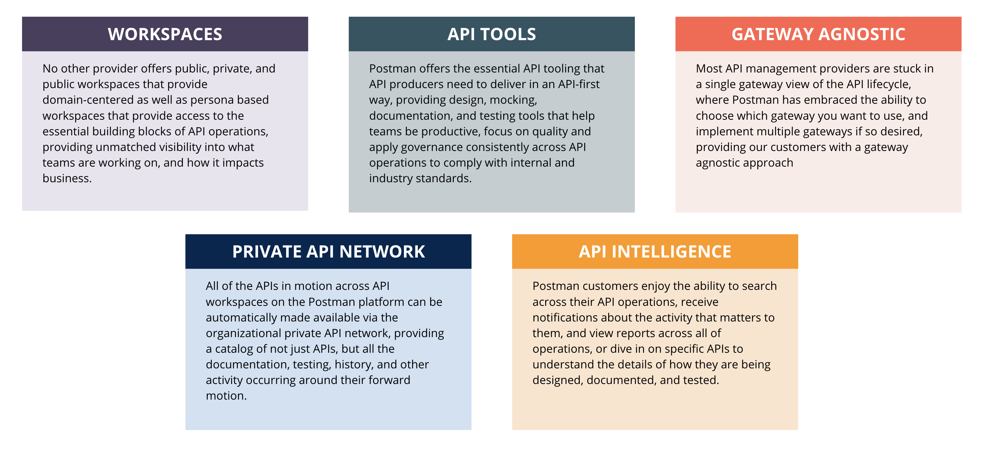

Welcome to Postman 101!
You're likely exploring this course if you're new to Postman or the API space.
Let's start by exploring some stories that might drive your needs from this course.
Choose a module that most closely matches your needs.
Clicking into any of the following will start you on your learning path:
What is an API?
“API” stands for Application Programming Interface. APIs enables software to communicate with other software and they are the foundation of modern software development.
For an introduction to API-first development and a look into the API lifecycle, check out this short video.
API Lifecycle

This graphic novel helps explain the benefits of being API-first. Check it out.

Sometimes trickier concepts are more easily understood through analogies, so let’s imagine a digital restaurant in which there are three characters.

A client - the patron, or application, at the restaurantA waiter - the API, or middle service, at the restaurantA chef - the server that assembles data, or ingredients, and intimately knows the data structures of the database
In this example, the API offered up a menu to the client from which the client could choose what to consume. Watch Claire Froelich expand more on this example in this video.
How does Postman interact with APIs?
Postman is a collaborative platform for building, using, and testing APIs. It uses HTTP, or hypertext transfer protocol, to transmit data in a request-response cycle.
More than 10 million people use Postman and for many teams, Postman is an everyday tool used to interact with APIs.
Another tool often used by developers to interact with APIs is cURL. cURL, which stands for client URL, is a command line tool that developers use to transfer data to and from a server. Sound familiar?

Not all developers can work easily with walls of text and many prefer the graphical user interface Postman offers.

Postman's key competitive differentiators
Knowledge Check!
What are APIs and how does Postman use them?
When you feel you can answer the question above, practice making requests along with Valentin Despa in this introductory video.
When finished, select the left arrow to return to the story selection page.
Debugging and testing an API
Debugging an API involves understanding the anatomy of a request and response from an API.

Whenever we are transmitting data in either direction (whether getting information FROM a database or sending information TO a database), we are interacting with an API in a request-response cycle.
Some things we would find in a request are a Method and an Endpoint with a Path.

A request can also include Parameters, Headers, and a Body.
When testing an API, it's especially important to understand the anatomy of a response from the API.
Developers pay close attention to status codes, headers, and response bodies that APIs return.

Postman allows developers to write their own tests, which can analyze response data in order to ensure the expected information was retrieved or sent.
For more practice testing APIs, watch Valentin Despa walk through the anatomy of a response and writing tests in this video.
Knowledge Check!
What steps should you take in Postman to test an API?
When you feel you can answer the question above, "test" your API testing skills by selecting any workspace, navigating to the bottom right of your Postman application or web browser, selecting Bootcamp, and taking the Debugging and Manual Testing mini course.
Collaboration in Postman
There are many different ways to collaborate within Postman. To begin, let's review some key concepts about workspaces.

Workspaces allow users to group related APIs, collections, environments, mocks, and monitors. There are three categories of workspaces.
- Public - Enable collaboration on entities with anyone across the world.
- Team - Access can be shared and managed with select collaborators.
- Personal - Visible only to you.
...